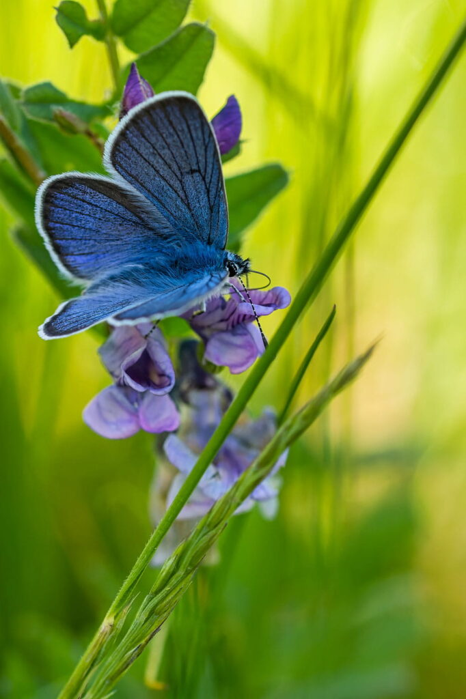

Fluturele Albastru
Fluturele albastru este o specie de fluture răspândită în America de Nord și Centrală. Acesta are o culoare albastră strălucitoare și are o anvergură de aproximativ 3,8-6,3 cm.
Această specie preferă zonele deschise, precum pășunile și câmpurile. Este un polenizator important pentru multe specii de flori, iar larvele sale se hrănesc cu plante din familia Fabaceae, inclusiv cu lupinul.